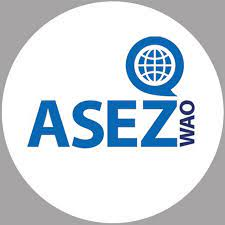
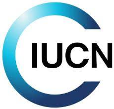
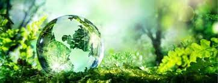
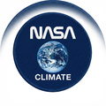
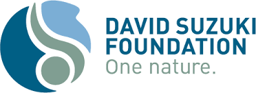
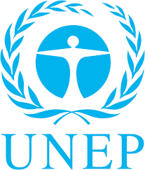

Response network / 03
Change is
already
in motion.
A selected network of institutions moving environmental knowledge into conservation, policy, climate observation, and local action. Follow their work directly from the source.

Community action · global volunteer network
ASEZ
Save the Earth from A to Z is a global university-student volunteer movement that connects environmental campaigns to practical local action.

Conservation · knowledge network
IUCN
The International Union for Conservation of Nature brings governments, civil society, and experts together around the evidence needed to safeguard nature.

Public policy · international cooperation
Global Affairs Canada
Canada's international affairs department coordinates the country's global engagement, including climate finance and environmental cooperation.

Earth observation · climate science
NASA Climate
NASA's Earth-science program measures a changing planet from the ground, air, and space, turning long-term observations into accessible climate evidence.

Environmental justice · Canadian action
David Suzuki Foundation
A Canadian environmental organization working at the intersection of climate solutions, biodiversity, environmental rights, and community-led change.

Multilateral leadership · global environment
UNEP
The United Nations Environment Programme works with governments and partners to provide environmental leadership and advance sustainable solutions worldwide.
Stay grounded
Follow the
evidence back.
Every field note in this atlas points to a source. Use the research desk to trace the facts, imagery, and context behind the work.
Open the research desk